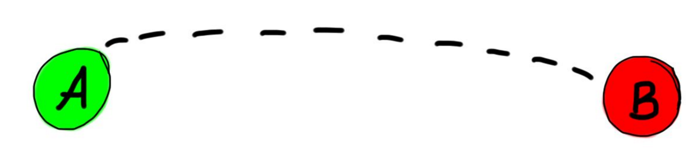

<div  flex layout="row" layout-align="center" ng-controller="mainController as main">

            <ng-map zoom="11" center="{{address}}" style="width:600px; height:400px" class="inner-border">
          <directions
            draggable="false"
            travel-mode="DRIVING"
            origin="{{address}}"
            destination="{{finalAddress}}">
          </directions>
            </ng-map>
		
</div>

<div flex layout="column" layout-align="center center" class="inner-border">
    
	<h2><b>We have made cab arrangements as well</b></h2>
	<h3>Would you rate the place
	<md-button ng-disabled="disabled" class="md-raised md-primary" ng-click="upvote();toggle()">
	     condusive ?
	 </md-button>
	</h3>
</div>